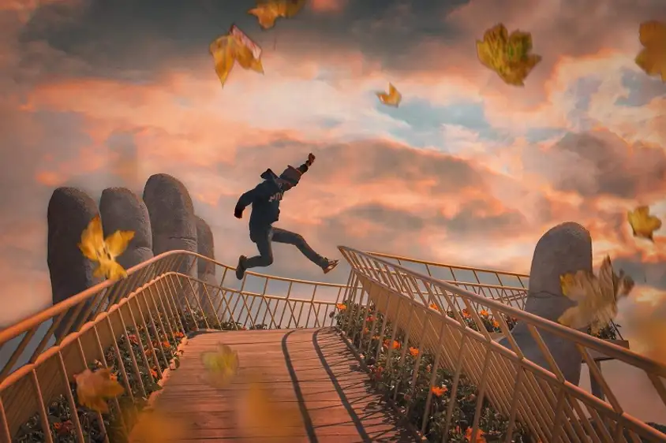

Bí quyết “sống ảo” ở Cầu Vàng
Đặt chân lên đến Cầu Vàng Đà Nẵng, ngoài để được tận mục sở thị cây cầu được thế giới
ca ngợi, chắc hẳn ai cũng muốn “săn” được những tấm hình để đời. Và đây là trọn bộ kíp
kíp “sống ảo” ở Cầu Vàng ai cũng nên “bỏ túi”:
- Bí quyết đầu tiên để sở hữu những tấm hình triệu like là chọn được một
góc chụp đẹp. Một góc chụp siêu phẩm và ít đụng hàng chính là chụp từ
trên cao với flycam. Thiết bị này sẽ giúp bạn sở hữu khuôn hình bao quát
toàn cảnh cây cầu độc đáo và thiên nhiên hùng vĩ xung quanh. Bức hình sẽ
càng ấn tượng hơn nếu bạn đến đây vào khoảng thời gian vắng khách.
- Khu vực bàn tay chính là điểm nhấn của cây cầu nên đây là một điểm check
in lý tưởng. Bạn có thể căn chỉnh góc máy để bắt trọn đôi bàn tay khổng
lồ với mặt cầu tạo chiều sâu phía sau.
- Trong trường hợp đến Cầu Vàng vào lúc lượng khách quá đông, đừng vội
nản với phông nền lộn xộn. Bí quyết lúc này là đừng ham toàn cảnh. Hãy
giơ ống kính lên và ngắm khuôn hình nào “sạch” nhất để chụp một bức hình
bán thân hoặc chân dung là OK. Bạn có thể đứng bên phải và chụp cắt một
góc của cây cầu để có tấm hình độc đáo.
- Độ cong mềm mại chính là yếu tố tạo nên nét quyến rũ của cây cầu này.
Nếu có thể tìm được góc máy thể hiện được “đường cong” và chiều sâu
của cây cầu thì quá là lý tưởng.
